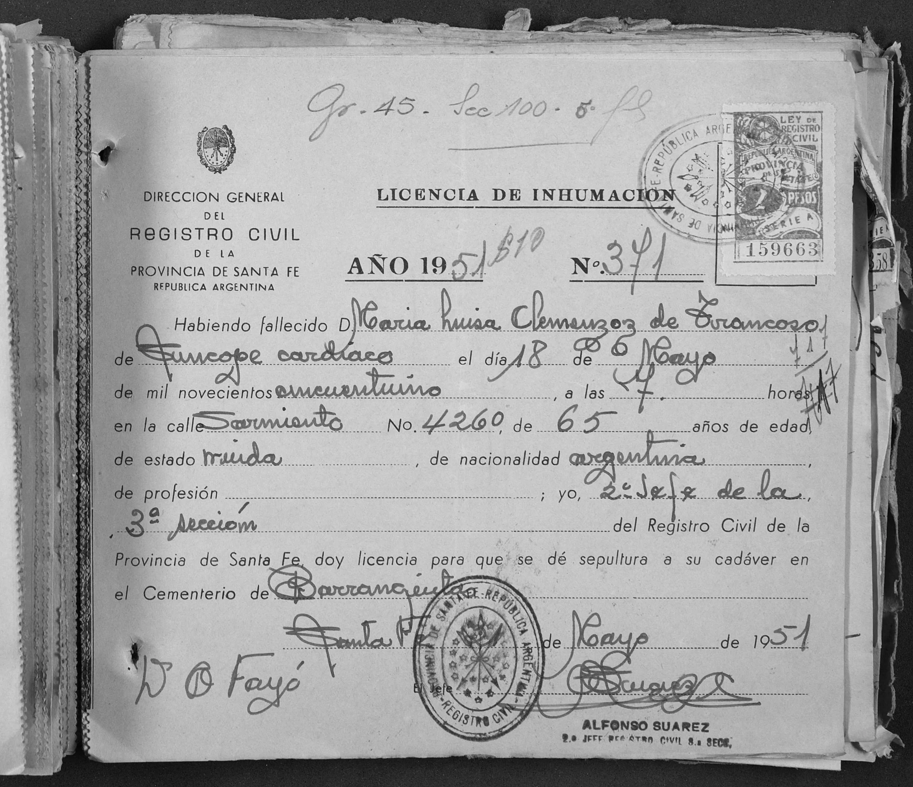
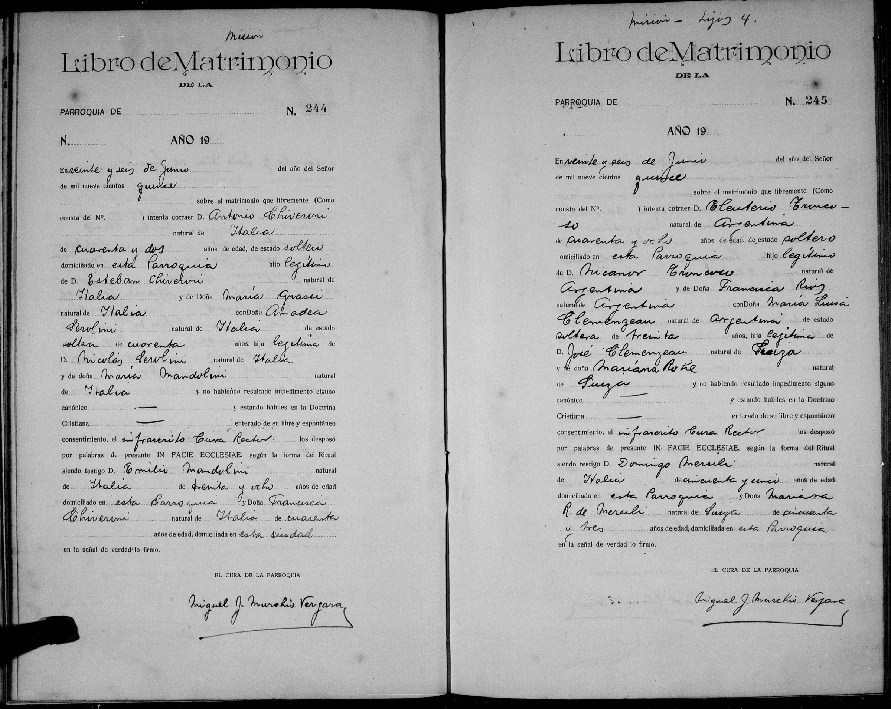

La historia
María Luisa fue la hija legítima de Jose Clemenzo y Marianna Roh — a diferencia de sus primos de la rama de Francisco, sus padres estaban casados en regla ante la iglesia. Su nacimiento no está documentado directamente, pero el cruce de las edades declaradas en tres actas lo acota con una precisión inusual: 30 años al casarse el 26-6-1915, 65 al morir el 18-5-1951 y 19 en el bautismo de su hijo, el 24-6-1905 — tomadas literales, las tres solo son compatibles con un nacimiento el 25 o 26 de junio de 1885 (con la reserva de que las edades declaradas suelen errar por uno, como probó el caso de Emiliana Elena Baster: la ventana prudente sigue siendo ~mayo–junio de 1885). Ese bautismo la declara además «natural del País»: nació en la Argentina — la familia de José ya estaba en el país a mediados de 1885.
En 1905, soltera y de 19 años, tuvo a su hijo natural José Martín (José Martín Clemenzo), bautizado en Ntra. Sra. del Carmen con el padre en blanco — y con Domingo Mersilli (Domingo Mersilli, identificación casi segura) de padrino: la órbita Mersilli ya rodeaba a la familia diez años antes de reaparecer en su casamiento. Diez años después, el 26 de junio de 1915, casó con Eleuterio Troncoso — argentino, soltero de 48 años (18 más que ella), hijo legítimo de Nicanor Troncoso y Francisca Ruiz (lectura Ruiz/Ríos insegura). El acta parroquial N.º 245 (cura rector Miguel J. Murchio Vergara) dejó dos regalos:
Enviudó de Troncoso en fecha aún no documentada y murió de síncope cardíaco el 18 de mayo de 1951, a las 7 hs, en la calle Sarmiento 4260 de la ciudad de Santa Fe — «María Luisa Clemenzoz de Troncoso», 65 años, viuda. Fue sepultada en el cementerio de Barranquitas (el mismo donde en 1968 sepultarían a su prima Carlota Julia Clemenzo).
En [[el-mito-clemenceau]] quedó descartado que la rama de Lucía Magallanes descienda de ella: la «María Luisa casada con Agustín el italiano» de la leyenda es su prima Maria Luisa Clemenzo (casada Costabile); ella casó Troncoso.
Cronología
| Año | Fuente | Qué dice |
|---|---|---|
| ~1885 (mayo–junio; quizá 25/26-6) | Cruce de edades (actas de 1905, 1915 y 1951) | Nace en la Argentina («natural del País»); hija legítima de José Clemenzo y Marianna Roh |
| 1905 | Bautismo de José Martín Clemenzo (Ntra. Sra. del Carmen, Santa Fe) | Soltera, «de diez y nueve años», tiene a su hijo natural José Martín; padre en blanco; padrino casi seguro Domingo Mersilli (Domingo Mersilli) |
| 1915-06-26 | Acta de matrimonio parroquial N.º 245 | Casa, «soltera, de treinta años», con Eleuterio Troncoso (48, soltero, hijo de Nicanor Troncoso y Francisca Ruiz); el cura escribe «Clemenzeau»; testigos Domingo Mersili y «Mariana R. de Mersili», su madre recasada |
| 1951-05-18 | Licencia de inhumación N.º 371, Registro Civil de Santa Fe | Muere «María Luisa Clemenzoz de Troncoso», 65 años, viuda, de síncope cardíaco, en Sarmiento 4260, Santa Fe; sepultada en el cementerio de Barranquitas |
Qué falta / hipótesis
Líneas de investigación
- Buscar su bautismo (~1885) en parroquias de Santa Fe — la Iglesia Matriz Todos los Santos ya dio los bautismos de José Domingo Clemenzo (1884) y Felisa Clemenzo Roh (1890), de sus hermanos
- Identificar la parroquia del casamiento de 1915 (formulario en blanco; cura Miguel J. Murchio Vergara como pista)
- Buscar la defunción de Eleuterio Troncoso (1915–1951, Santa Fe)
- Buscar hijos Troncoso–Clemenzo en nacimientos de Santa Fe post-1915
Fuentes
- Acta de matrimonio parroquial N.º 245, parroquia sin identificar (Santa Fe), 26-06-1915 (imagen en su ficha)
- Licencia de inhumación N.º 371, Registro Civil de la Provincia de Santa Fe, mayo de 1951 (imagen en su ficha)
Documentos

